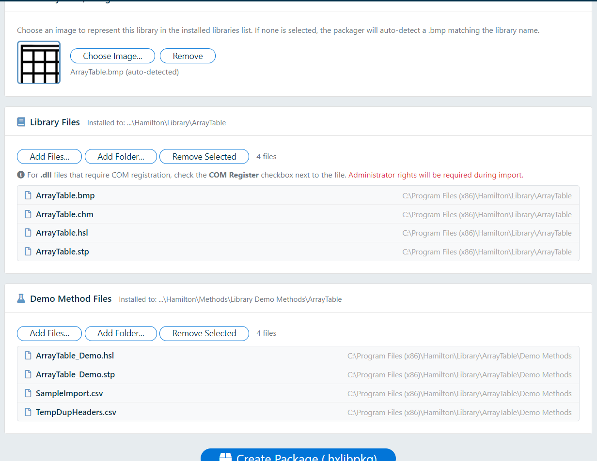
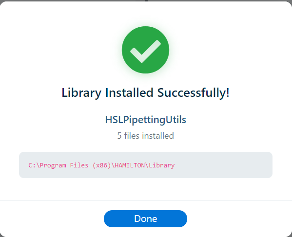
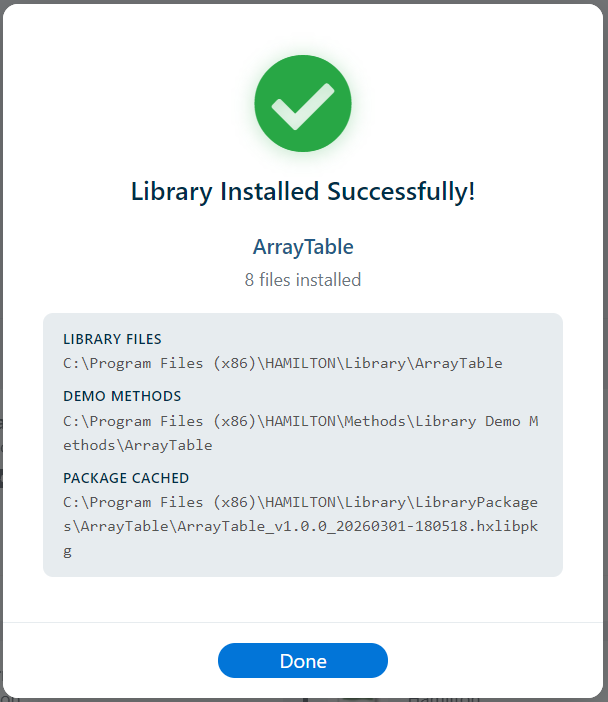

Overview
Importing is the primary way to install new VENUS libraries. Library Manager supports importing a single library package (.hxlibpkg) or a multi-library archive (.hxlibarch). Both file types use the binary container format - they are not plain ZIP files and cannot be opened by standard archive tools. Both the GUI and the CLI provide full import capabilities.
Single Package Import (.hxlibpkg)
GUI Workflow
- Navigate to the Import tab in the main window
- Browse and select a
.hxlibpkgfile - Library Manager validates the binary container integrity (HMAC-SHA256), then reads the package contents and validates that a
manifest.jsonis present - Signature verification: The package's integrity signature is verified. For v2.0 packages, this includes Ed25519 digital signature verification and publisher certificate validation. The result is displayed in a Signature Status section of the preview modal:
- Verified (green) - All file hashes match, the HMAC is valid, and the Ed25519 digital signature verifies against the embedded publisher certificate
- Converted Distribution (grey) - Package was converted from an executable installer. Shows the source
.exefilename and Authenticode signer info (if signed), or “Created from official library distribution” (if unsigned). HMAC integrity is still verified. - Unsigned (yellow) - No signature found (legacy/third-party package). Import proceeds normally.
- Failed (red) - Package may be corrupt or tampered with, or uses a rejected legacy v1.0 HMAC-only signature. A confirmation dialog warns the user before proceeding.
- A pre-install preview modal appears showing:
- Library metadata (name, version, author, organization, VENUS compatibility)
- Embedded icon/image preview
- Signature verification status
- OEM verified badge
 next to the author/organization if the package is from a recognized OEM vendor with a valid code-signing certificate
next to the author/organization if the package is from a recognized OEM vendor with a valid code-signing certificate - Converted distribution badge ✔ next to the author/organization if the package was converted from an executable installer (see Converted Distribution Badge)
- Lists of library files and demo method files
- COM DLL indicators and registration notices
- Destination install paths
- An overwrite/update warning if a library with the same name is already installed
- Confirm the import to proceed
- If the package is an upgrade/overwrite of an existing library, a destructive confirmation modal requires re-typing the library name before installation can continue
- If audit-enforcement settings are enabled, the same destructive modal can also require an audit comment and/or operator signature before the action can proceed

After selecting a package file, the pre-install preview modal is displayed with all library metadata, file lists, and signature verification results:

What Happens During Import
When an import is confirmed, Library Manager performs the following steps in order:
- Version Mismatch Check: If the package's
app_versiondiffers from the running application version, a warning is shown. A higher-severity warning appears when the package was created with a newer major version, as it may contain unsupported features. Legacy packages (without anapp_version) are accepted silently with a console notice. - Directory Creation: Creates the target library directory at
<Library Root>\<LibraryName>and the demo methods directory at<Methods Root>\Library Demo Methods\<LibraryName>if they do not exist - File Extraction: Extracts all files from the
library/folder in the ZIP to the library directory, and all files fromdemo_methods/to the demo directory. Help files fromhelp_files/are also extracted to the library directory. - CHM Detection: Any
.chmfiles among the library files are automatically identified and tracked separately in thehelp_filesfield - COM Registration (GUI only): If the manifest lists COM DLLs, the GUI initiates a UAC elevation flow to register them with
RegAsm.exe /codebase. If registration fails, the user can choose to continue (with a warning badge) or cancel and clean up - Integrity Hashing: SHA-256 hashes are computed for all tracked file types (
.hsl,.hs_,.sub, and COM-registered.dllfiles) and stored in the database record - HSL Function Parsing: Public function signatures are extracted from all
.hslfiles and stored in the database for indexing and display - Database Record: A comprehensive record is created (or updated if overwriting) in the
installed_libscollection, including all metadata, file lists, paths, hashes, parsed functions,app_version,format_version,windows_version,venus_version, andpackage_lineage. Any unrecognized manifest fields are also preserved in the database for forward compatibility. - Group Assignment: The library is automatically assigned to the first non-default custom group, or a new "Libraries" group is created if none exists
- Package Caching: The
.hxlibpkgfile is copied to the package store for future rollback
Post-Install Summary
After a successful import, the GUI displays a summary showing the number of extracted files, output paths, and COM registration outcome.

An alternative view of the success confirmation, highlighting the installed library details and file paths:

Archive Import (.hxlibarch)
GUI Workflow
- Use the Import Archive workflow from the Import tab
- Select a
.hxlibarchfile - Library Manager validates the archive and lists all contained
.hxlibpkgentries - If conflicts are detected (same library already installed), a conflict-resolution modal requires an explicit decision per library: Skip or Overwrite
- The import cannot continue until every conflict row has an explicit action
- If at least one conflict is set to overwrite and audit-enforcement settings are enabled, the modal also requires audit comment/signature fields before continuing
Archive Processing
Each embedded .hxlibpkg is extracted and installed sequentially using the same process as single-package import. For each package:
- The inner
.hxlibpkgbinary container is validated, opened, and its integrity signature is verified (HMAC-SHA256 and Ed25519 for v2.0 packages) - packages that fail container or signature verification are automatically rejected and skipped - The inner package's
manifest.jsonis read - Files are extracted to the appropriate directories
- Integrity hashes are computed
- The database record is created/updated
- The package is cached in the package store
- Group auto-assignment is performed based on settings
An aggregate completion summary reports per-library success or failure. The library card view refreshes after the import completes.
CLI Import
See CLI: import-lib for single package imports and CLI: import-archive for archive imports.
Overwrite Behavior
If a library with the same name is already installed:
- GUI: The pre-install preview shows a warning. The user must complete a destructive confirmation modal by typing the exact library name before overwrite is allowed.
- CLI: The command fails with an error unless
--forceis specified. With--force, the existing database record is removed and the new package is installed in its place.
Audit Comment and Signature Requirements
In GUI workflows, overwrite/upgrade actions can be configured to require additional audit fields:
- Required Audit Comment: At least 26 characters, must include a space, must contain more than 10 letters, and must include at least one sequence of 2 or more letters.
- Required Signature: Must be longer than 4 characters and include at least one space (intended to enforce first + last name style signatures).
- These fields appear only when enabled in Settings; otherwise they are hidden and not required.
Warning: Overwriting a library replaces all existing files and the database record. The previous version is only recoverable if it was cached in the package store. Use Version Rollback to restore earlier versions.
COM DLL Registration
Some libraries include .NET DLLs that must be registered as COM objects for use in VENUS methods. The manifest's com_register_dlls field identifies which DLLs require this. COM DLL registration is a key feature of Library Manager, automating what would otherwise be a manual, error-prone process.
Critical: 32-bit (x86) Only
Hamilton VENUS 6 is a 32-bit (x86) application. All COM DLLs must be registered using the 32-bit RegAsm.exe located at:
C:\Windows\Microsoft.NET\Framework\v4.0.30319\RegAsm.exe
Do NOT use the 64-bit version at C:\Windows\Microsoft.NET\Framework64\. The 64-bit RegAsm.exe registers COM objects in the 64-bit registry hive (HKLM\SOFTWARE\Classes), which is invisible to 32-bit VENUS. Using the wrong bitness will cause VENUS methods to fail at runtime with "Class not registered" or similar errors, even though the registration appeared to succeed.
The Library Manager GUI automatically selects the correct 32-bit RegAsm.exe and includes a defensive guard that blocks any accidental use of the 64-bit version.
- GUI: Automatically initiates COM registration via the 32-bit
RegAsm.exe /codebasewith UAC elevation during import. The correct 32-bitRegAsm.exeis located automatically fromC:\Windows\Microsoft.NET\Framework\(neverFramework64). - CLI: Does not perform COM registration automatically. The CLI records COM DLL intent in the database. You must run the 32-bit
RegAsm.exe /codebase <dll>manually with administrator rights after import:C:\Windows\Microsoft.NET\Framework\v4.0.30319\RegAsm.exe /codebase "C:\Program Files (x86)\HAMILTON\Library\MyLib\MyComHelper.dll"
Note: COM registration requires administrator privileges. If registration fails in the GUI, you are given the choice to continue the import (with a COM warning badge on the library card) or cancel and clean up the extracted files.
RegAsm.exe is only visible to 64-bit processes. Since Hamilton VENUS is a 32-bit process, it can only see COM objects registered through the 32-bit RegAsm.exe. This applies to all VENUS versions (4.x, 5.x, and 6.x).
Audit Trail
Every import operation (single package or archive) is automatically recorded in the persistent audit trail (audit_trail.json). The entry captures:
- The Windows username of the person who performed the import
- The Windows OS version of the importing machine
- The installed Hamilton VENUS version at the time of import
- The computer hostname
- The library name, version, author, source file path, install paths, and signature verification status
- When required in GUI destructive flows, operator-provided
action_commentandaction_signaturevalues
This enables full traceability of who installed each library, on which system, and under what environmental conditions. Combined with the packaging audit trail entry (recorded on the packager's machine), a complete chain of custody is established from package creation to deployment. See Library Audit Log for details.
Importing from VENUS Package Files
In addition to Library Manager packages, you can also import libraries from Hamilton VENUS native .pkg files. This allows extracting and selectively importing library content from VENUS installation packages. See Importing from VENUS Packages (.pkg) for the full workflow.